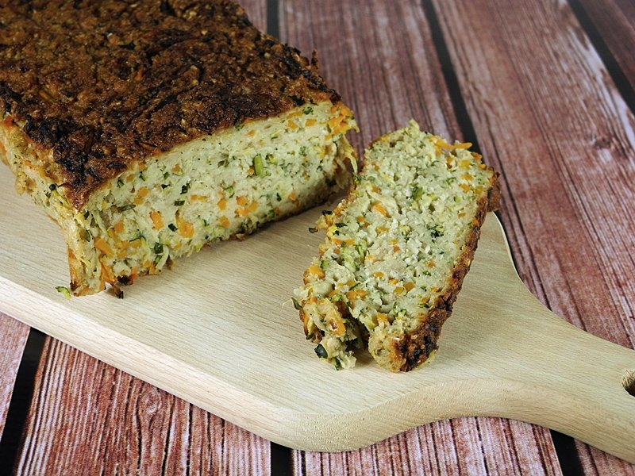
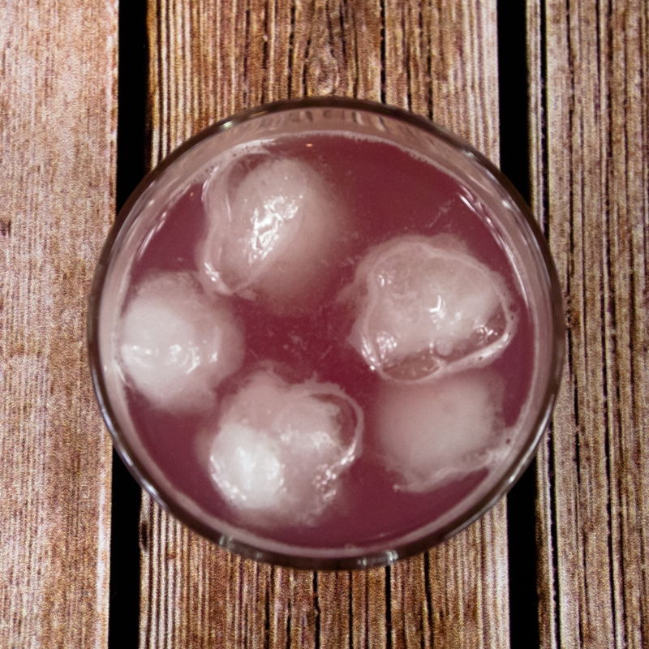
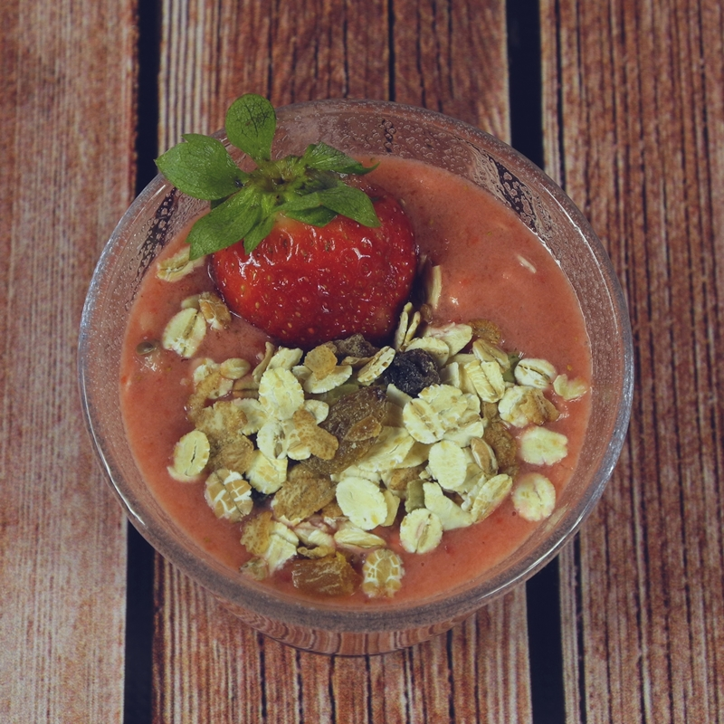
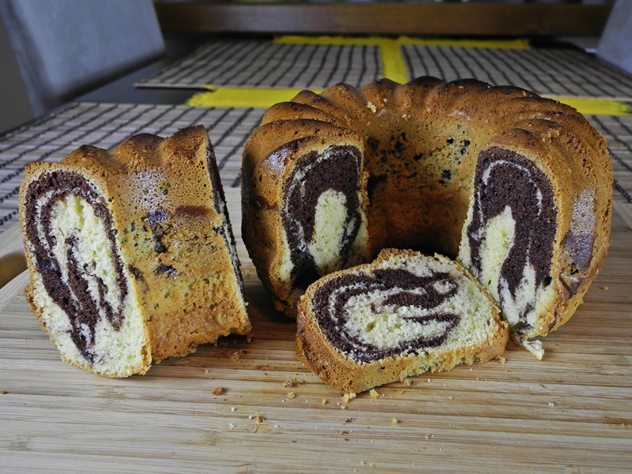

Gotuję jak Masterszef ;)

Nazywam się Katarzyna Izak i jestem początkującym Front-end Developerem. W wolnych chwilach śledzę nowinki technologiczne, uwielbiam fotografować, czasem coś uszyję, a dla relaksu i ćwiczenia "głowy" rozwiązuję sudoku i inne łamigłówki logiczne. Niegdyś uprawiałam jeździectwo - aktualnie skutecznie zarażam tą miłością moją latorośl. :) Lubię tradycyjne gry towarzyskie, ale trochę czasu poświęcam też grom komputerowym.
Czasem żartobliwie mówią o mnie "haker w spódnicy", ponieważ sprzęty elektroniczne się mnie słuchają.
Ta strona nie będzie o programowaniu... To taka moja mała książka kucharska ze zbiorem ulubionych przepisów kulinarnych. Do Masterchefa mi daleko (dlatego tytuł strony jest z przymróżenim oka), ale gdzieś ten zbiór trzeba trzymać. ;)
Przepisy
Pasztet z cukinii
Na wstępie pragnę zaznaczyć, że jeśli ktoś robiąc pasztet z cukinii oczekuje smaku tradycyjnego pasztetu, to niech lepiej nie robi go wcale, bo do pasztetu to nie jest ani trochę podobne... :] Smak jest inny, konsystencja raczej też - jedynie w wyglądzie zewnętrznym można doszukiwać się podobieństw. :-) Mimo wszystko zachęcam do wypróbowania - warzywny pasztet na pewno znajdzie swoich amatorów. Można go podawać zarówno na zimno, jak i na ciepło - w tej drugiej wersji polecam posypać go delikatnie ulubionym żółtym serem!
Zapiekane bataty

Ostatnio będąc na zakupach skusiłam się na batata - już od jakiegoś czasu chciałam spróbować jak smakują "słodkie ziemniaki". Jakie było moje zdziwienie, gdy odkryłam znajomy kolor, konsystencję, a nawet bardzo podobny smak! Dla mnie batat bardzo przypomina w smaku pieczoną dynię piżmową, aczkolwiek przy dyni jednak pozostanę, która jest jeszcze łatwiejsza w przygotowaniu...
Rabarbarowe orzeźwienie
Tym razem przedstawię przepis, choć nic twórczego to nie będzie, na mój ulubiony kompot - z rabarbaru! Schłodzony idealnie nadaje się na gorące dni, ponieważ nie jest zbyt słodki. W różnych wariacjach dodawane są do niego jakieś owoce, np. truskawki, ale chcę zaprezentować jego najprostszą wersję i zachęcić do jego wypróbowania, choć wątpię by był ktoś w Polsce, kto nie zna tego smaku z dzieciństwa... :)
Koktajl z truskawek
Truskawki to moje ulubione owoce! Oto przepis na mój koktajl nr 1! Swojego czasu zajadałam się nim prawie co wieczór... Polecam go również na gorące dni - przygotowuję go z owoców wyjętych z lodówki, więc orzeźwienie gwarantowane!
Babka marmurkowa
Wielkanoc, to Święto które nie może się obyć bez... BABKI! Przepis sprawdzony - baba wychodzi puszysta, ale nie sucha, a najważniejsze, że chyba nie da się jej zepsuć. :-)